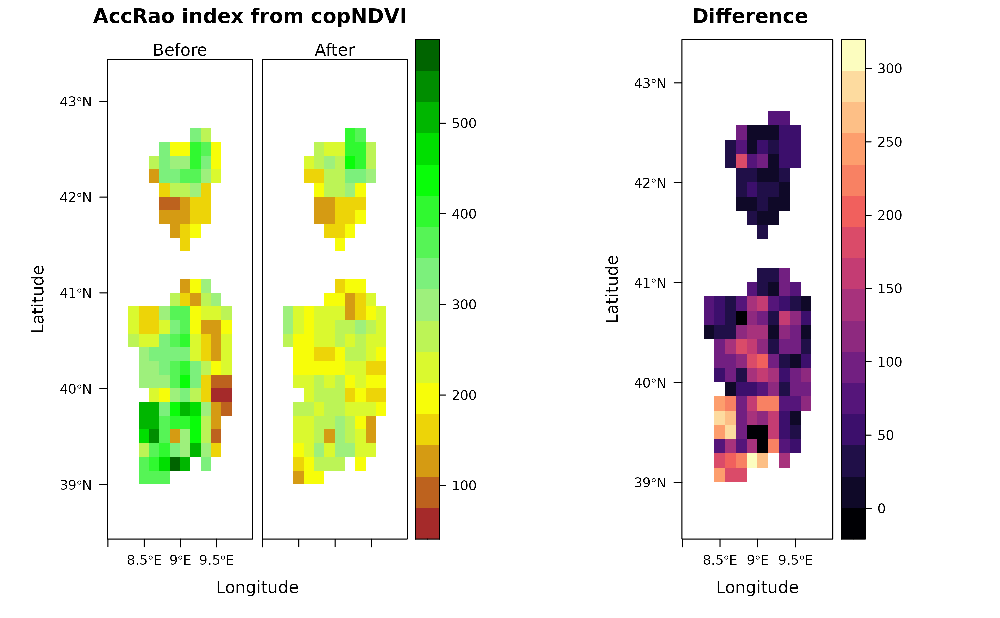

Derive the Accumulation Rao's Index
Matteo Marcantonio, Jonathan Lenoir, Elisa Thouverai, Duccio Rocchini
Source:vignettes/rasterdiv_04_Accumulation_Rao.Rmd
rasterdiv_04_Accumulation_Rao.Rmd
# Required packages
require(rasterdiv)
require(terra)
require(rasterVis)
require(gridExtra)
require(ggplot2)In this vignette, we illustrate how to employ rasterdiv to compute the accumulation function (integral) of Rao values across various alpha levels. Choosing the accumulation function to represent Rao’s index values is beneficial as selecting a single optimal alpha level can be intricate. Integrating over a range of alphas provides a more holistic perspective.
Overview
The copNDVI RasterLayer is bundled with the
rasterdiv package. It’s an 8-bit raster, signifying
pixel values ranging between 0 to 255. To align it with the familiar
range of (-1,1), you can use the command
raster::stretch(copNDVI, minv=-1, maxv=1).
copNDVI <- load_copNDVI()Resample NDVI to a coarser resolution
To expedite computation, the SpatRaster will undergo “resampling” at a resolution 20 times coarser, focussing specifically on the Sardinia and Corsica islands in the Mediterranean Sea.
#Resample using terra::aggregate and a linear factor of 20
copNDVIlr <- aggregate(copNDVI, fact=20)Simulating NDVI Value Reduction (e.g., Due to Extensive Forest Fires)
Pixels with NDVI values exceeding 150 will be reduced, based on a normal distribution centred at 50 with a standard deviation of 5.
ndvi.after <- ndvi.before
names(ndvi.after) <- "after"
ndvi.after[ndvi.after >= 150] <- ndvi.after[ndvi.after >= 150] - as.integer(rnorm(length(ndvi.after[ndvi.after >= 150]), mean=50, sd=5))
levelplot(c(ndvi.before, ndvi.after), layout=c(2,1), margin=FALSE, col.regions=col.ndvi, main="copNDVI", names.attr=c("Before", "After"))Compute the accumulation Rao’s index
#The accumulation Rao's index (accRao) will be calculated for the two rasters and for each pixel using alphas ranging from 1 to 10.
accrao.before <- RaoAUC(alphas=1:10, x=ndvi.before, dist_m="euclidean", window=3, method="classic", rasterAUC=TRUE, na.tolerance=0.4, np=1)
accrao.after <- RaoAUC(alphas=1:10, x=ndvi.after, dist_m="euclidean", window=3, method="classic", rasterAUC=TRUE, na.tolerance=0.4, np=1)
names(accrao.after[[1]]) <- "after"
#The absolute difference between before and after can now be calculated
accrao.diff <- abs(accrao.after[[1]] - accrao.before[[1]])Visualise the difference
l1 <- levelplot(c(accrao.before[[1]],accrao.after[[1]]),as.table = T, layout=c(0,2,1), margin=FALSE,col.regions=col.ndvi, names.attr=c("Before", "After"),main="AccRao index from copNDVI")
l2 <- levelplot(accrao.diff, layout=c(1,1), margin=FALSE, main="Difference")
grid.arrange(l1,l2, layout_matrix = rbind(c(1,2))) ## Demonstrate accRao calculation We will demonstrate the calculation of the accRao using a specific 3x3 pixel moving window from the NDVI, both before and after the change.
To begin, let’s extract this 3x3 pixel area from the two rasters.
ndvi.t0 <- as.matrix(ndvi.before,wide=T)[7:9, 6:8, drop=FALSE]
ndvi.t1 <- as.matrix(ndvi.after,wide=T)[7:9, 6:8, drop=FALSE]
alphas = 1:10 #set the alpha interval over which to integrate Rao's index
N = 3^2 #and set the number of pixels in the selected windowNext, let’s construct a straightforward function to compute the parametric Rao’s Index across a vector of NDVI values.
RaoFx <- function(alpha,N,D) {( sum((1/(N^4)) * D^alpha )*2)^(1/alpha)}Using the established function, we can now determine Rao’s index for both the NDVI value vectors at timepoints t0 and t1, exploring alpha values from 1 to 10.
rao.t0 <- sapply(alphas, function(a) {RaoFx(alpha=a, N=N,D=as.vector(ndvi.t0))})
rao.t1 <- sapply(alphas, function(a) {RaoFx(alpha=a, N=N,D=as.vector(ndvi.t1))})Before integrating Rao’s values at timepoints t0 and t1, we first approximate a function to interpolate Rao’s index across different alpha levels.
Visualising Accumulation Function Differences
Let’s depict the disparities between the two accumulation functions by showcasing them as areas under their respective curves.
Now that we have the values of the two integral we visualise the differences between the two accumulation functions representing them as area under the curve.
accrao.df <- cbind.data.frame(alphas,rao.t0,rao.t1,alphas1=rep(0,10))
g1 <- ggplot(accrao.df,aes(x=alphas,y=rao.t0)) +
ylab("AccRao's Index") +
geom_line(col="red",lwd=3) +
geom_area(data=accrao.df,aes(x=alphas,y=rao.t0),fill="red",alpha=0.3,inherit.aes=FALSE) +
geom_area(data=accrao.df,aes(x=alphas,y=rao.t1),fill="blue",alpha=0.3,inherit.aes=FALSE) +
geom_line(data=accrao.df,aes(x=alphas,y=rao.t1),col="blue",lwd=3,inherit.aes=FALSE) +
geom_text(data=cbind.data.frame(x=3.5,y=60),aes(x=x,y=y),label=expression(integral((frac(1, N^4) %.% D^alpha)^(frac(1,alpha)) * dx == 456, alpha==0, 10)),col="red",cex=5,inherit.aes=FALSE) +
geom_text(data=cbind.data.frame(x=7,y=25),aes(x=x,y=y),label=expression(integral((frac(1, N^4) %.% D^alpha)^(frac(1,alpha)) * dx == 343, alpha==0, 10)),col="blue",cex=5,inherit.aes=FALSE) +
geom_text(data=cbind.data.frame(x=8,y=72),aes(x=x,y=y),label="Difference = 113",col="black",cex=4,angle=12,inherit.aes=FALSE) +
ggtitle("AccRao index before, after and difference") +
theme_bw()
# #Everything in one plot, the red and white squares overlayed on the rasters represent the moving window selected for the exercise.
l1 <- l1+levelplot(ndvi.t0,col.regions="red")
l2 <- l2+levelplot(ndvi.t0,col.regions="white")
grid.arrange(l1,l2,g1, layout_matrix = rbind(c(1,2),c(3,3)))